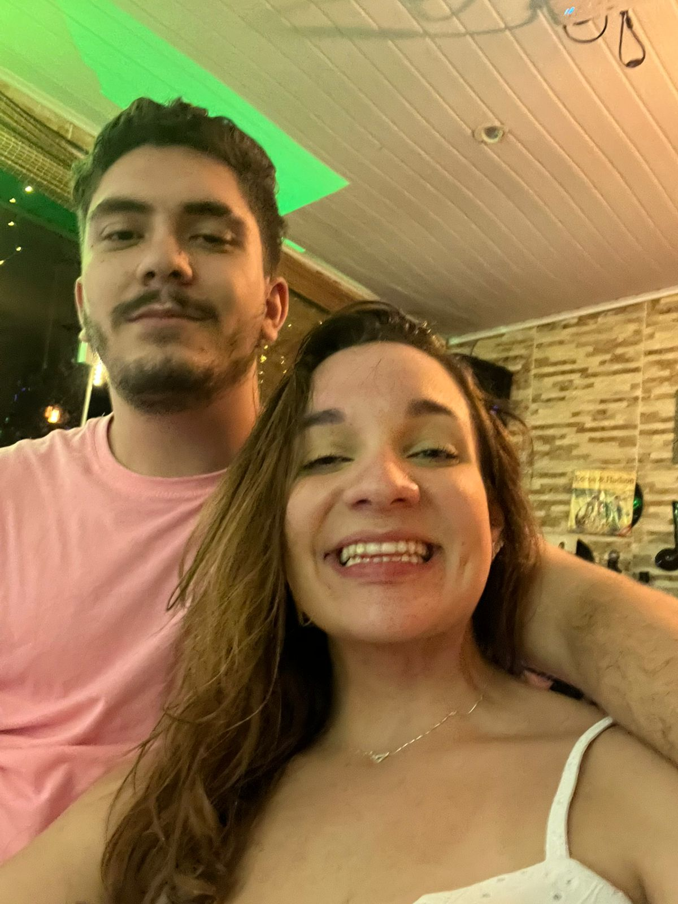
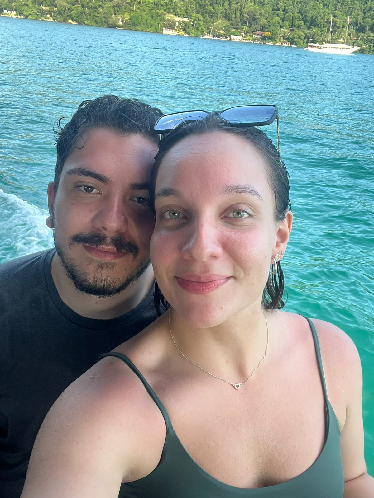
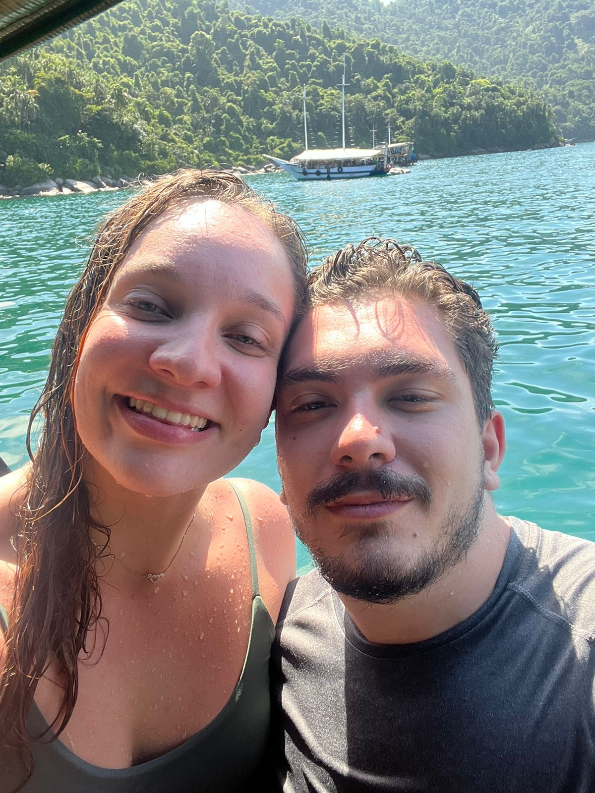
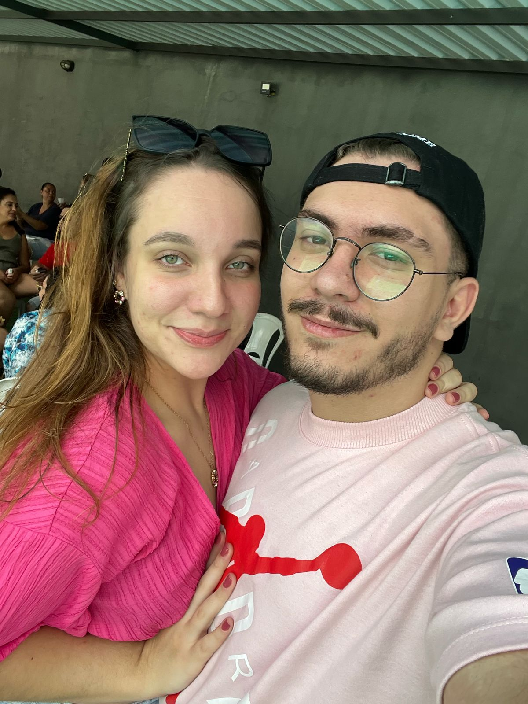
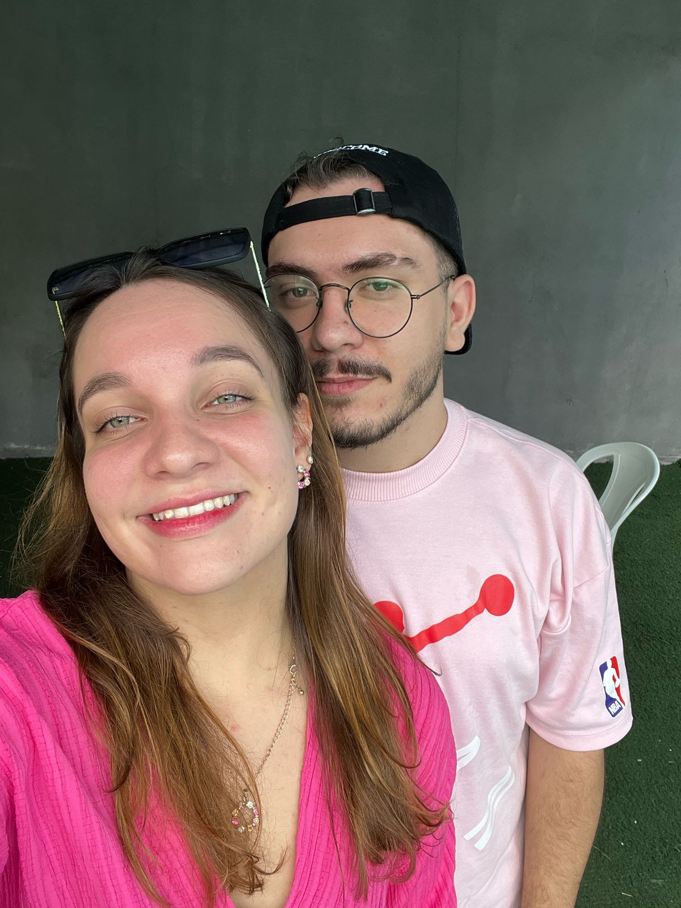
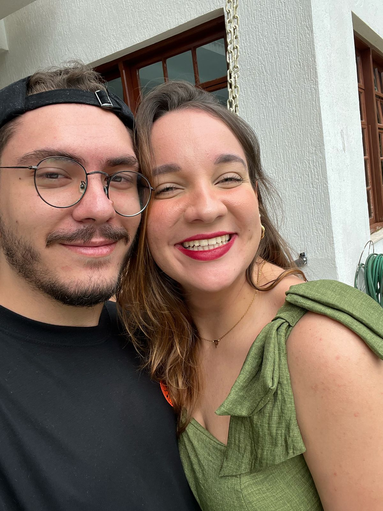
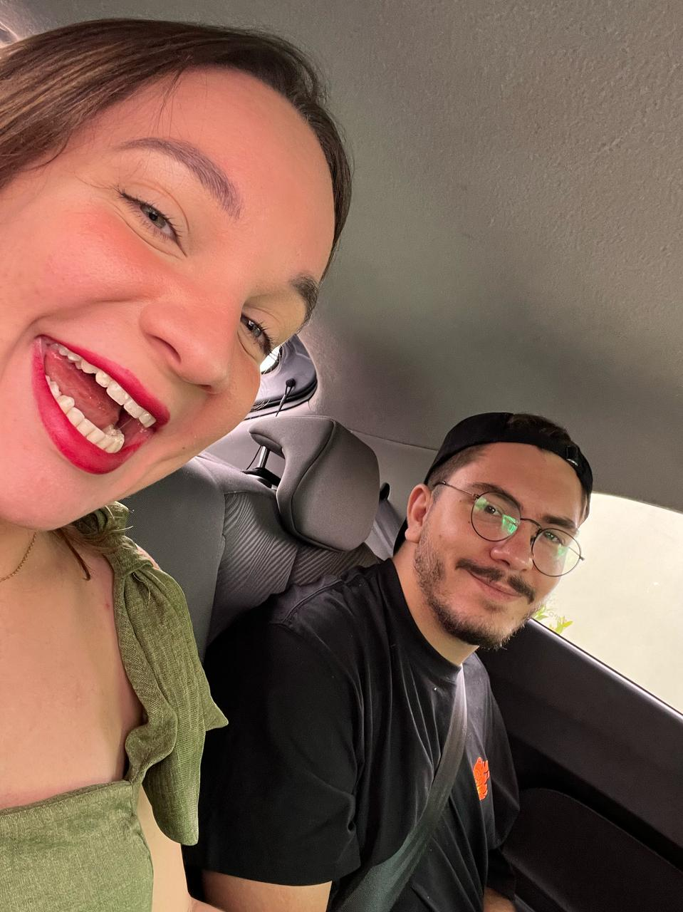
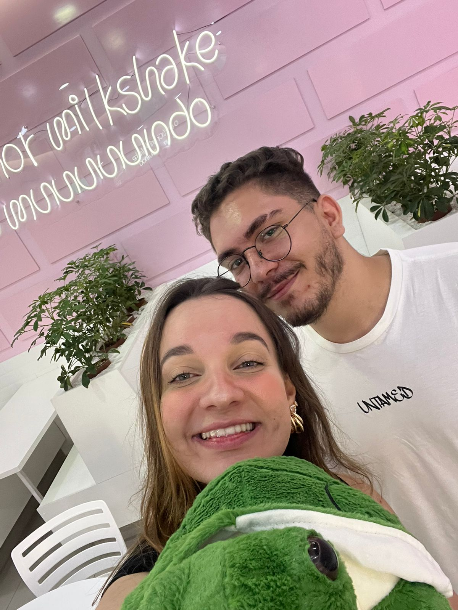
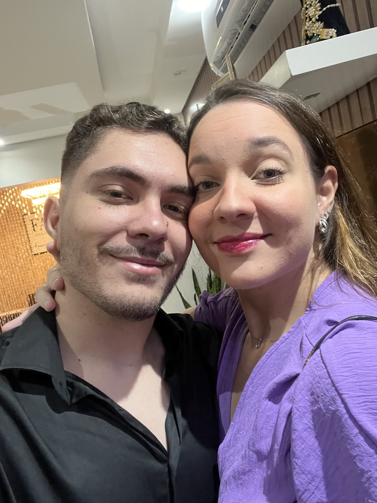

Giovana Fiore,
Mesmo depois de já ter escrito algumas vezes para você, ainda não é fácil para mim. Desculpa, português nunca foi meu forte kkk. Mas você o meu esforço.
Vou começar falando mais do mesmo que você já ouviu tantas vezes: apenas te agradecer. Só pelo fato de você me amar e eu te amar, já me sinto uma pessoa melhor. Você me transformou positivamente em todos os aspectos da minha vida. Você me inspira. Quando eu crescer, quero ser igual a você. Tenho orgulho de dizer que você é a minha mulher!
Quero te agradecer por todo esse tempo que já passamos juntos. Sei que é apenas o começo da nossa história, ainda há muito para escrevermos juntos. Mas deixo bem claro que quero que seja você, e sei que vai ser você. Apenas você, para todo o sempre. Até o dia da minha morte, vai ser por você e para você.
Já falei inúmeras vezes e repito quantas forem necessárias: você é e sempre será a minha prioridade. Se hoje eu vivo, é por você!
É impressionante que eu ainda me emociono escrevendo pra você, toma no cu viu.Continuando... eu nunca imaginei que teria alguém ao meu lado, em especial alguém como você. Sempre pedi por alguém tão boa e tão perfeita. Às vezes até perfeita demais, porque quase sempre eu estou errado… brincadeira kkk. Mas você é realmente tudo o que eu sempre quis para a minha vida.
Mesmo que eu não demonstre tanto, eu te apoio e fico muito feliz com as suas conquistas, sejam elas pessoais ou profissionais. Eu sei o quanto você merece ter o melhor na sua vida. Quem te vê de fora não imagina a mulher que você é, nem tudo o que já passou nessa vida — e mesmo assim seguiu em frente, cada vez mais forte.
Então, nessa mensagenzinha, quero apenas te agradecer por ter mudado a minha vida e, principalmente, por me amar e me permitir te amar. Sou extremamente grato por isso.
Eu te amo hoje, amanhã e para todo o sempre.
Do seu namorado, Pietro.
No fim da página tem um botãozinho… clica lá, bebê! ❤️
Você está me aguentando há:
Fotinhos nossas, hihi








